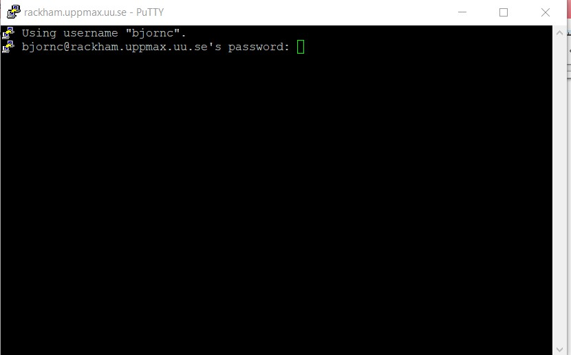
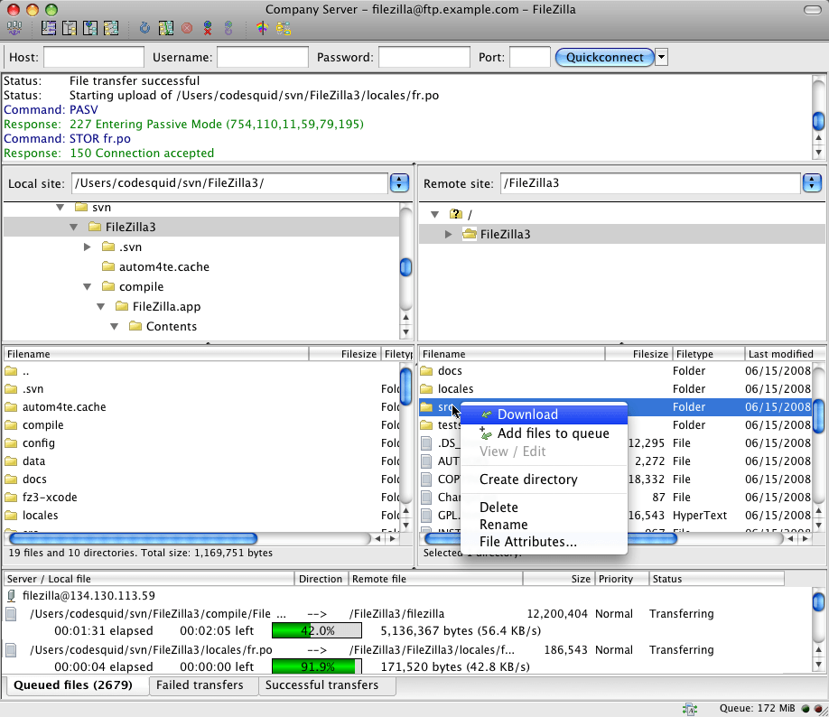
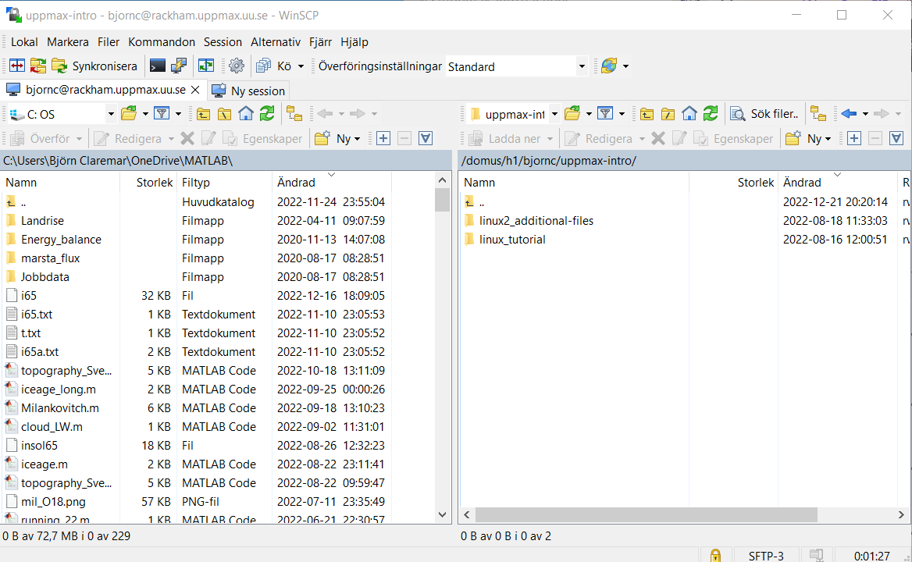
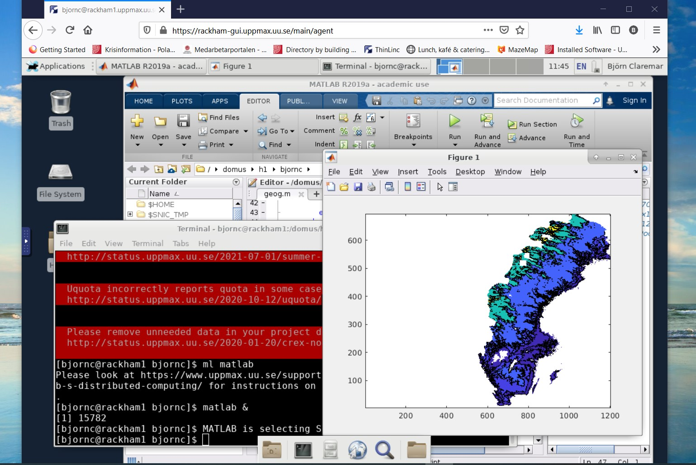

Log in to Rackham¶
Objectives
- We'll go through platform specific (Mac/Linux/Windows) ways to log in to UPPMAX
- See different clients
- Enable graphics
Warning
- If you lack a user account, visit the Getting started page
General understanding¶
- When logging in to UPPMAX from your local computer you will arrive to your home folder at the login node.
- This means that only light analysis and and calculations should be made here.
- You will see this in the prompt after "@" as the clustername and a low number. For instance:
- You will later learn how to reach the calculation nodes. Then the prompt states the node number with a single letter, like "r" for Rackham. For instance:
Quick start log in!
- Below you find how to log in
- Further down we present other procedures to reach Rackham, depending on your planned work.
Log in with a terminal, omitting support for graphics¶
- Start terminal (e.g. from Launchpad) or iTerm2
- "< >" prompts you to set the keyword specific for you or your needs. In the example above, this is basically your username.
-
iTerm2 goodies:
-
You can save hosts for later.
- Drag and drop scp
- Start terminal (see below)
- "< >" prompts you to set the keyword specific for you or your needs. In the example above, this is basically your username.

-
The ssh (secure shell) client putty
- You can save hosts for later.
- No graphics.
-
Windows Powershell terminal can also work
- Cannot save hosts
- no graphics
- PowerShell
-
Windows command prompt can also work
- Cannot save hosts
- no graphics
- Command Prompt
Working on Rackham
- Now we present alternatives to work on Rackham
The login¶
Login procedure
Which login procedure is best for You, depends on:
- Your background
- Your OS environment,
- Your planned interaction with your local computer
- Your planned use of graphics on the cluster
Login procedure
If you plan to:
-
do day-to-day work where terminal shell is sufficient
- Mac: Terminal, iTerm2
- Linux: Terminal
- Windows: Putty, Windows Powershell or even command prompt (CMD)
-
interact with you local computer
-
Mac/Linux: you can always work in a local shell (mutiple terminal windows open)
- (S)FTP browser: Filezilla, Cyberduck
-
Windows
- (S)FTP browser: WinSCP
- MobaXterm has built-in SFTP browser
- you may benefit from having a Windows Subsystem for Linux, WSL(2)
-
-
do day-to-day work with some graphical applications (X forwarding)
- Mac: Terminal, iTerm2 + XQuartz
- Linux: Terminal
- Windows: MobaXterm
-
integrate you cluster work with code development
- All OS: Example Visual Studio Code
-
use sophistic graphical interfaces like RStudio and MATLAB etcetera
- ThinLinc application
Terminals (see above)¶
Terminal with X11 server and light graphics¶
-
Download XQuartz or other X11 server for Mac OS
-
Start terminal (e.g. from Launchpad) or iTerm2
-XEnables X11 forwarding.-YEnables trusted X11 forwarding.
-
Download and install ONE of the X-servers below (to enable graphics)
-
or...
-
Install a ssh (secure shell) program with built-in X11 and sftp file manager
- MobaXterm
- sftp frame makes it easy to move, upload and download files.
- ... though downloading from remote host to local is usually easier.
- tabs for several sessions
- Start local terminal and a SSH session by:
-XEnables X11 forwarding.-YEnables trusted X11 forwarding.

- Or even better, create and save a SSH session, as shown in image below.
- This allows you to use MobaXterm as a file manager and to use the built-in graphical texteditor.
- You can rename the session in the Bookmark settings tab.

X11-forwarding from the command line (generally)
- Graphics can be sent through the SSH connection you’re using to connect
-
Use primarily
ssh -Y <...>or secondaryssh -X <...> -
The X servers that enables graphics are needed, as mentioned above!
- When starting a graphical program, a new window will open, but your terminal will be “locked”.
- Run using "
&" at the end to run it as a background process e.g. "xeyes &" or “gedit &”
- Alternatively, use
<ctrl>-zto put e.g. gedit to sleep and type "bg" to make last process in background.
Test log in to Rackham, using your terminal
- First try:
- If you receive errors or warnings, instead try:
- If you do have X11 installed:
Graphical file manager¶
- This is good if you want to move many files between host and local and cannot use wildcards.
- For copying of files with sftp (secure file transfer protocol) between your client computer (where you are) and the cluster Filezilla can be the choice.
-

-
For copying of files between your client computer (where you are) and the cluster WinSCP can also be the choice.
-

Linux on your computer¶
Local Linux environment
- You may sometimes benefit from having a local Linux environment.
- Examples:
- Mimic cluster environment to work with your local files and data as on the Cluster
- get used to Linux (!)
- Mac is UNIX and very Linux-like
- Windows requires WSL (Windows subsystem for Linux)
For windows users who wants to get started with WSL (not covered here)
- Install WSL (Windows Subsystem for Linux)
- https://docs.microsoft.com/en-us/windows/wsl/install-win10 (Links to an external site.)
- Don’t forget to update to wsl2
- Install a distribution or a ssh (secure shell) program
- Distribution such as ubuntu or
- (recommended) a ssh program such as MobaXTerm
- https://mobaxterm.mobatek.net/ (Links to an external site.)
- sftp frame makes it easy to move, upload and download files.
- You may want to check this webpage as well!
- https://hackmd.io/@pmitev/Linux4WinUsers (Links to an external site.)
Visual Studio Code (not covered here)¶
- Integrate you cluster work with code development
- SSH-remote from VS Code
- Remote development using Visual Studio Code on Alvis cluster
- Similar to Rackham. Just change login details!
ThinLinc (all platforms!)¶
- This gives you a desktop environment, as if you were working on your own computer!
- On web:
- Or use the client

keypoints
- When you log in from your local computer you will always arrive at a login node with limited resources.
- You reach the calculations nodes from within the login node (See Submitting jobs section)
- You reach UPPMAX clusters either using a terminal client or Thinlinc
- Graphics are included in Thinlinc and from terminal if you have enabled X11.
- Which client to use?
- Graphics and easy to use
- ThinLinc
- Best integrated systems
- Visual Studio Code has several extensions (remote, SCP, programming IDE:s)
- Windows: MobaXterm is somewhat easier to use.